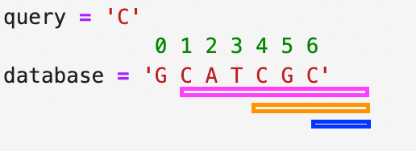

db = "GCATCGC"Suffix Array
bioinformatics
data structure
Suffix Array
One motivation behind suffix array is that any position in our database that is a match to any substring of our query sequence can be thought of as the beginning of a suffix.

To illustrate:
If we wanted to query the sequence C in database of GCATCGC then there would be 3 matching suffixes.
1. One suffix starts from the first C character at index 1.
2. The second suffix starts from the second C character at index 4.
3. The third suffix starts from the third C character at index 6.
To be able to do this, we first need to create an array of suffixes starting at each character of our database, then sort the array of suffixes alphabetically.
suffixes = {i:db[i:] for i,c in enumerate(db)}
print('Suffixes:\t\t', suffixes)Suffixes: {0: 'GCATCGC', 1: 'CATCGC', 2: 'ATCGC', 3: 'TCGC', 4: 'CGC', 5: 'GC', 6: 'C'}sorted_suffixes = {k: v for k, v in sorted(suffixes.items(), key=lambda item: item[1])}
sorted_suffix_keys = list(sorted_suffixes.keys())
print('Sorted Suffixes:\t', sorted_suffixes)
print('Sorted Suffix Keys:\t', sorted_suffix_keys)Sorted Suffixes: {2: 'ATCGC', 6: 'C', 1: 'CATCGC', 4: 'CGC', 5: 'GC', 0: 'GCATCGC', 3: 'TCGC'}
Sorted Suffix Keys: [2, 6, 1, 4, 5, 0, 3]Suffix Array Search
We can do pattern matching on suffix array using binary search. Below we tried to search for suffixes matching the query GC.
query = 'GC'
low = 0
high = len(suffixes) - 1
found = False
while high > low and not found:
mid = (low + high) // 2
mid_key = sorted_suffix_keys[mid]
low_key = sorted_suffix_keys[low]
high_key = sorted_suffix_keys[high]
if query == suffixes[mid_key][:len(query)]:
found = True
while query not in suffixes[low_key][:len(query)] and suffixes[low_key][:len(query)] < query and low < mid:
low += 1
while query not in suffixes[high_key][:len(query)] and suffixes[high_key][:len(query)] > query and high > mid:
high -= 1
elif suffixes[mid_key][:len(query)] > query:
high = mid - 1
if high < 0:
print('out of bound, not found')
elif suffixes[mid_key][:len(query)] < query:
low = mid + 1
if low >= len(suffixes):
print('out of bound, not found')
print('-'*100)
print('Query:\n', query)
print('Original database:\n', db)
print('Sorted suffix array:\n', sorted_suffixes, '\n')
if found:
low_key = sorted_suffix_keys[low]
high_key = sorted_suffix_keys[high]
print(f'Query "{query}" has a match at positions in the sorted suffix array:\t[{low_key}: {high_key}]')
else:
print(f'No match found for query {query}.')
print('-'*100)----------------------------------------------------------------------------------------------------
Query:
GC
Original database:
GCATCGC
Sorted suffix array:
{2: 'ATCGC', 6: 'C', 1: 'CATCGC', 4: 'CGC', 5: 'GC', 0: 'GCATCGC', 3: 'TCGC'}
Query "GC" has a match at positions in the sorted suffix array: [5: 0]
----------------------------------------------------------------------------------------------------Let’s make this as a function and do searching on some more queries.
def get_suffixes(db:str) -> tuple:
"""Create suffix array and sort it in alphabetical order by the suffix sequences"""
suffixes = {i:db[i:] for i,c in enumerate(db)}
sorted_suffixes = {k: v for k, v in sorted(suffixes.items(), key=lambda item: item[1])}
return suffixes, sorted_suffixes
def query_suffix_array(query:str, db:str, verbose:bool=False) -> list:
"""Search for query in the preprocessed suffix array using binary search.
Returns a list of matched suffix sequences.
"""
suffixes, sorted_suffixes = get_suffixes(db)
sorted_suffix_keys = list(sorted_suffixes.keys())
low = 0
high = len(suffixes) - 1
found = False
while high > low and not found:
mid = (low + high) // 2
mid_key = sorted_suffix_keys[mid]
low_key = sorted_suffix_keys[low]
high_key = sorted_suffix_keys[high]
if verbose: print('low key', low_key, 'mid key', mid_key, 'high key', high_key)
if query == suffixes[mid_key] or query in suffixes[mid_key][:len(query)]:
found = True
while query not in suffixes[low_key][:len(query)] and suffixes[low_key] < query and low < mid:
low += 1
low_key = sorted_suffix_keys[low]
if verbose: print('found bound, new low', sorted_suffix_keys[low])
if query == suffixes[low_key][:len(query)]:
break
while query not in suffixes[high_key][:len(query)] and suffixes[high_key] > query and high > mid:
high -= 1
high_key = sorted_suffix_keys[high]
if verbose: print('found bound, new high1', sorted_suffix_keys[high])
if query == suffixes[high_key][:len(query)]:
break
while query in suffixes[sorted_suffix_keys[high+1]][:len(query)]:
high += 1
if verbose: print('found bound, new high2', sorted_suffix_keys[high])
elif suffixes[mid_key] > query:
high = mid
if verbose: print('move high=mid')
if high < 0:
print('out of bound, not found')
elif suffixes[mid_key] < query:
low = mid
if verbose: print('move low=mid')
if low >= len(suffixes):
print('out of bound, not found')
print('-'*100)
print('Query:\n', query)
print('Original database:\n', db)
print('Sorted suffix array:\n', sorted_suffixes, '\n')
if found:
low_key = sorted_suffix_keys[low]
high_key = sorted_suffix_keys[high]
result = [low_key, high_key]
start_result_index = sorted_suffix_keys.index(result[0])
end_result_index = sorted_suffix_keys.index(result[1])
result_keys = sorted_suffix_keys[start_result_index : end_result_index+1]
matched_result = [sorted_suffixes[k] for k in sorted_suffixes if k in result_keys]
print('-'*100)
print(f'Query "{query}" has a match at positions in the sorted suffix array:\t[{low_key}: {high_key}]')
print('Matched suffixes:\t', matched_result)
print('-'*100)
return matched_result
print('-'*100)
print(f'No match found for query {query}.')
print('-'*100)
return []
query = "ACC"
query_suffix_array(query, db)----------------------------------------------------------------------------------------------------
Query:
ACC
Original database:
GCATCGC
Sorted suffix array:
{2: 'ATCGC', 6: 'C', 1: 'CATCGC', 4: 'CGC', 5: 'GC', 0: 'GCATCGC', 3: 'TCGC'}
----------------------------------------------------------------------------------------------------
No match found for query ACC.
----------------------------------------------------------------------------------------------------[]query = "C"
query_suffix_array(query, db)----------------------------------------------------------------------------------------------------
Query:
C
Original database:
GCATCGC
Sorted suffix array:
{2: 'ATCGC', 6: 'C', 1: 'CATCGC', 4: 'CGC', 5: 'GC', 0: 'GCATCGC', 3: 'TCGC'}
----------------------------------------------------------------------------------------------------
Query "C" has a match at positions in the sorted suffix array: [6: 4]
Matched suffixes: ['C', 'CATCGC', 'CGC']
----------------------------------------------------------------------------------------------------['C', 'CATCGC', 'CGC']query = "AT"
query_suffix_array(query, db)----------------------------------------------------------------------------------------------------
Query:
AT
Original database:
GCATCGC
Sorted suffix array:
{2: 'ATCGC', 6: 'C', 1: 'CATCGC', 4: 'CGC', 5: 'GC', 0: 'GCATCGC', 3: 'TCGC'}
----------------------------------------------------------------------------------------------------
Query "AT" has a match at positions in the sorted suffix array: [2: 2]
Matched suffixes: ['ATCGC']
----------------------------------------------------------------------------------------------------['ATCGC']References & Credits:
1. Advance Data Structures: Suffix Arrays
1. Advance Data Structures: Suffix Array Search